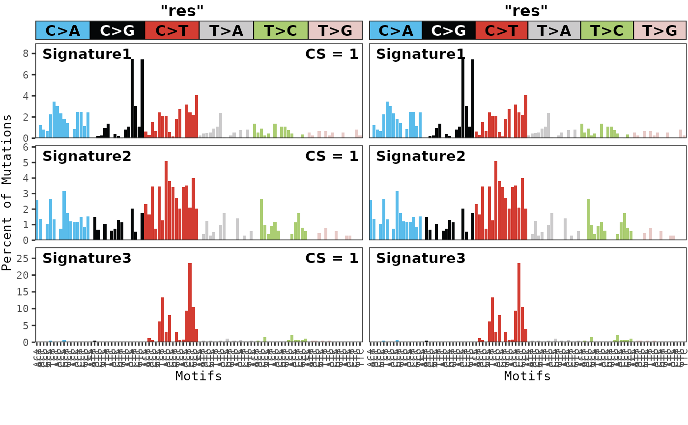

Compare two result files to find similar signatures
Usage
compare_results(
musica,
model_id,
other_model_id,
modality = "SBS96",
result_name = "result",
other_musica = NULL,
other_result_name = "result",
threshold = 0.9,
metric = "cosine",
result_rename = deparse(substitute(model_id)),
other_result_rename = deparse(substitute(other_model_id)),
decimals = 2,
same_scale = FALSE
)Arguments
- musica
A
musicaobject.- model_id
The name of the first model to compare.
- other_model_id
The name of the second model to compare.
- modality
Modality of results being compared. Default
"SBS96".- result_name
Name of the result list entry for the first result to compare. Default
"result".- other_musica
A second
musicaobject. If null, the provided musica object is used twice. DefaultNULL.- other_result_name
Name of the result list entry for the second result to compare. Default
"result".- threshold
threshold for similarity
- metric
One of
"cosine"for cosine similarity or"jsd"for 1 minus the Jensen-Shannon Divergence. Default"cosine".- result_rename
title for plot of first result signatures
- other_result_rename
title for plot of second result signatures
- decimals
Specifies rounding for similarity metric displayed. Default
2.- same_scale
If
TRUE, the scale of the probability for each signature will be the same. IfFALSE, then the scale of the y-axis will be adjusted for each signature. DefaultFALSE.
Examples
data(res)
compare_results(res,
model_id = "res", other_model_id = "res",
modality = "SBS96", threshold = 0.8
)

#> cosine x_sig_index y_sig_index x_sig_name y_sig_name
#> 1 1 1 1 Signature1 Signature1
#> 2 1 2 2 Signature2 Signature2
#> 3 1 3 3 Signature3 Signature3